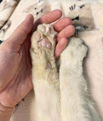
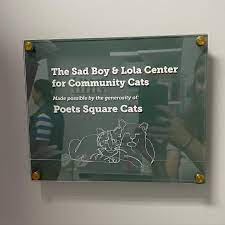

The Tale of Sadboy and Lola: A Love That Transcends
Introduction:
In the heart of the city, a love story unfolded that touched the souls of all who witnessed it. Sadboy and Lola,
two stray cats, found a connection so profound that even humans couldn't help but envy the depth of their bond.
Today, we mourn the loss of Sadboy, and in his memory, the poetsquare community for stray cats has created the
Sadboy and Lola Foundation to provide care for sick feline companions.
1. The Love Story:
Sadboy and Lola's love story was whispered through the alleys and echoed in the quiet corners of the city. Their
connection was undeniable, a testament to the emotional richness that animals can experience. Their playful
antics and quiet moments together warmed the hearts of those who bore witness.
2. Envy of Humans:
The love shared between Sadboy and Lola was so genuine that it sparked envy among humans. In a world often
dominated by complexities, the simplicity of their love was a beacon of light. Their story reminded us all of
the purity and strength that love can hold, transcending boundaries and species.

3. Mourning the Loss of Sadboy:
The passing of Sadboy left a void in the hearts of all who knew him, both feline and human alike. The poetsquare
community mourned the loss of a beloved friend, a symbol of the enduring power of love even in the face of
life's uncertainties.
4. The Sadboy and Lola Foundation:
In honor of Sadboy's memory and the love he shared with Lola, the poetsquare community for stray cats
established the Sadboy and Lola Foundation. This foundation is dedicated to providing care, support, and medical
assistance for sick stray cats, ensuring that they receive the love and attention they deserve.
5. Supporting Sick Feline Companions:
The Sadboy and Lola Foundation aims to extend the legacy of Sadboy's love by offering a helping paw to sick
feline companions. Whether it's medical treatment, shelter, or a warm meal, the foundation strives to make a
difference in the lives of stray cats facing health challenges.
6. Spreading Love Through Actions:
The foundation encourages the community to contribute in various ways, from volunteering at local shelters to
providing donations for veterinary care. By turning grief into compassionate action, the Sadboy and Lola
Foundation seeks to create a lasting impact on the lives of stray cats in need.

7. Keeping Sadboy's Spirit Alive:
While Sadboy may no longer roam the streets, his spirit lives on through the foundation's efforts. The love he
shared with Lola and the community serves as a reminder that every act of kindness, no matter how small, can
leave a lasting imprint on the world.
Conclusion:
The love story of Sadboy and Lola, though tinged with sorrow, has sparked a movement of compassion and care for
stray cats. The Sadboy and Lola Foundation stands as a tribute to their extraordinary bond, a beacon of hope for
sick feline companions, and a testament to the enduring power of love in all its forms.
 CATS-R-US.NG
CATS-R-US.NG